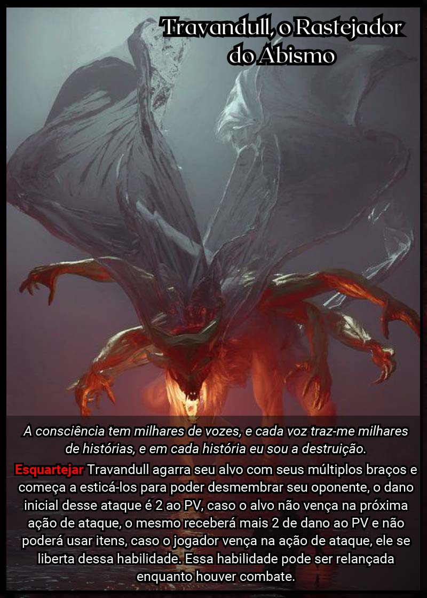
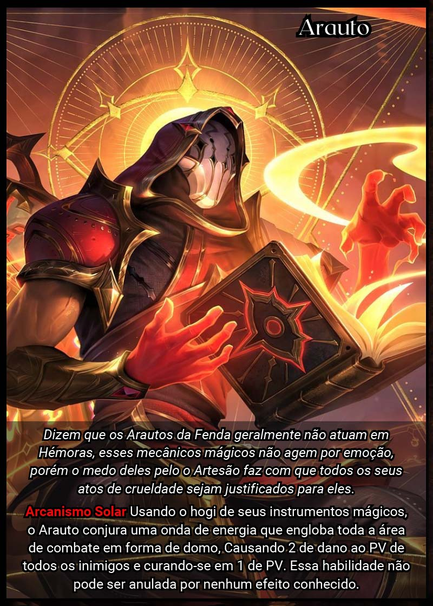

Portais que surgem no mapa, mediante a destruição de um Lorde, por meio de um fragmento de alma específico. As Fendas, locais que despejam criaturas turnos após turnos que dificultaram a vida do jogador.

